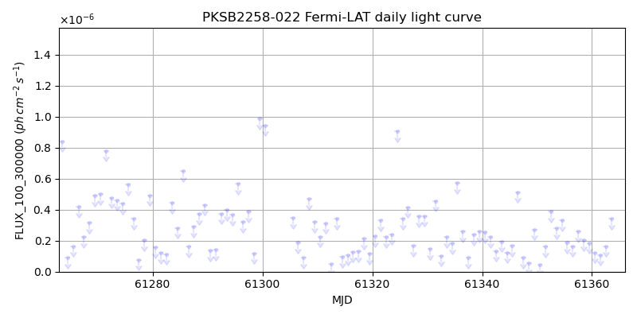

LAT Lightcurve site: https://fermi.gsfc.nasa.gov/ssc/data/access/lat/msl_lc/source/PKS_B2258-022
NED: Query
Time of last update of this page: UT: 2026-11-20 16:31 (MJD: 61364.688)
| Property | Value |
|---|---|
| R.A. | 23:01:07.92 |
| Dec. | -1:58:04.8 |
| z | 0.777 |
| 3FGL SpectrumType | |
| 3FGL PL Index | -1.00 |
| 3FGL Flux_100_300000 | -1.00e+00 |
| 3FGL Flux_1000_300000 | -1.00e+00 |
| 3FGL Flux >200 GeV | -1.00e+00 |
| 3FGL Extrap. Crab >200 GeV | -1.00 |
| 3FGL Flux After EBL Absorption >200GeV | -1.00e+00 |
| 3FGL EBL Crab Fraction >200GeV | -1.00 |

| MJD | dMJD | Flux | dFlux | Frac3FGL | FracCrab>200GeV | EBLFracCrab>200GeV |
|---|---|---|---|---|---|---|
| 61359.50 | 0.50 | 1.85e-07 | 0.00e+00 | 0.00 | 0.00 | -0.00 |
| 61360.50 | 0.50 | 1.24e-07 | 0.00e+00 | 0.00 | 0.00 | -0.00 |
| 61361.50 | 0.50 | 1.08e-07 | 0.00e+00 | 0.00 | 0.00 | -0.00 |
| 61362.50 | 0.50 | 1.64e-07 | 0.00e+00 | 0.00 | 0.00 | -0.00 |
| 61363.50 | 0.50 | 3.43e-07 | 0.00e+00 | 0.00 | 0.00 | -0.00 |
| MJD | dMJD | Flux | dFlux | Frac3FGL | FracCrab>200GeV | EBLFracCrab>200GeV |
|---|---|---|---|---|---|---|
| 61328.50 | 3.50 | 9.92e-08 | 0.00e+00 | 0.00 | 0.00 | -0.00 |
| 61335.50 | 3.50 | 9.65e-08 | 0.00e+00 | 0.00 | 0.00 | -0.00 |
| 61342.50 | 3.50 | 8.94e-08 | 0.00e+00 | 0.00 | 0.00 | -0.00 |
| 61349.50 | 3.50 | 9.26e-08 | 0.00e+00 | 0.00 | 0.00 | -0.00 |
| 61356.50 | 3.50 | 1.01e-07 | 0.00e+00 | 0.00 | 0.00 | -0.00 |

| MJD | dMJD | Flux | dFlux | Frac3FGL | FracCrab>200GeV | EBLFracCrab>200GeV |
|---|---|---|---|---|---|---|
| 61359.50 | 0.50 | 1.57e-08 | 0.00e+00 | 0.00 | 0.00 | -0.00 |
| 61360.50 | 0.50 | 4.03e-08 | 0.00e+00 | 0.00 | 0.00 | -0.00 |
| 61361.50 | 0.50 | 1.63e-08 | 0.00e+00 | 0.00 | 0.00 | -0.00 |
| 61362.50 | 0.50 | 2.75e-08 | 0.00e+00 | 0.00 | 0.00 | -0.00 |
| 61363.50 | 0.50 | 1.08e-08 | 0.00e+00 | 0.00 | 0.00 | -0.00 |

| MJD | dMJD | Flux | dFlux | Frac3FGL | FracCrab>200GeV | EBLFracCrab>200GeV |
|---|---|---|---|---|---|---|
| 61328.50 | 3.50 | 2.66e-08 | 0.00e+00 | 0.00 | 0.00 | -0.00 |
| 61335.50 | 3.50 | 3.42e-09 | 0.00e+00 | 0.00 | 0.00 | -0.00 |
| 61342.50 | 3.50 | 1.47e-08 | 0.00e+00 | 0.00 | 0.00 | -0.00 |
| 61349.50 | 3.50 | 5.72e-09 | 0.00e+00 | 0.00 | 0.00 | -0.00 |
| 61356.50 | 3.50 | 5.56e-09 | 0.00e+00 | 0.00 | 0.00 | -0.00 |
--------------------------------------------------------- Using user-supplied coords: 23:01:07.92 -1:58:04.8 2000 --------------------------------------------------------- FLWO UT night of: 2026-11-21 Local Sid. @ Midnight: 03:37 Sunset (-15.0) (local, UT): 18:33 01:33 Sunrise (-15.0) (local, UT): 05:47 12:47 Moonrise (local, UT): Moonset (local, UT): 03:40 10:40 Moon phase: 0.85 --------------------------------------------------------- AzTime LSID UT Obj_el Obj_az Mn_el Mn_az Sep. --------------------------------------------------------- 18:33 22:09 01:33 54.2 156.7 47.9 117.4 25.2 19:03 22:39 02:03 56.1 169.5 53.3 125.0 25.4 19:33 23:09 02:33 56.5 183.0 58.2 134.7 25.6 20:03 23:39 03:03 55.4 196.3 62.3 146.9 25.8 20:33 00:09 03:33 52.9 208.5 65.1 162.1 26.0 21:03 00:39 04:03 49.4 219.1 66.3 179.7 26.2 21:33 01:09 04:33 45.0 228.0 65.4 197.5 26.4 22:03 01:39 05:03 39.9 235.6 62.9 213.2 26.5 22:33 02:09 05:33 34.5 242.1 59.0 225.9 26.7 23:03 02:39 06:03 28.7 247.7 54.2 235.9 26.9 23:33 03:09 06:33 22.7 252.7 48.9 243.9 27.1 00:03 03:39 07:03 16.5 257.2 43.2 250.4 27.3 00:33 04:10 07:33 10.2 261.5 37.3 255.9 27.5 01:03 04:40 08:03 4.0 265.5 31.2 260.7 27.8 01:33 05:10 08:33 -1.5 269.5 25.1 265.1 28.0 02:03 05:40 09:03 -9.0 273.4 19.0 269.2 28.3 02:33 06:10 09:33 -15.4 277.5 12.9 273.0 28.5 03:03 06:40 10:03 -21.7 281.8 6.8 276.9 28.8 03:33 07:10 10:33 -27.9 286.5 1.0 280.7 29.1 04:03 07:40 11:03 -33.9 291.7 -4.9 284.7 29.4 04:33 08:10 11:33 -39.7 297.7 -11.1 288.8 29.7 05:03 08:40 12:03 -45.2 304.7 -16.8 293.2 30.0 05:33 09:10 12:33 -50.2 313.0 -22.3 298.1 30.3 05:47 09:25 12:47 -52.4 317.6 -24.8 300.5 30.5 --------------------------------------------------------- Dark hours >55 deg.: 0.00